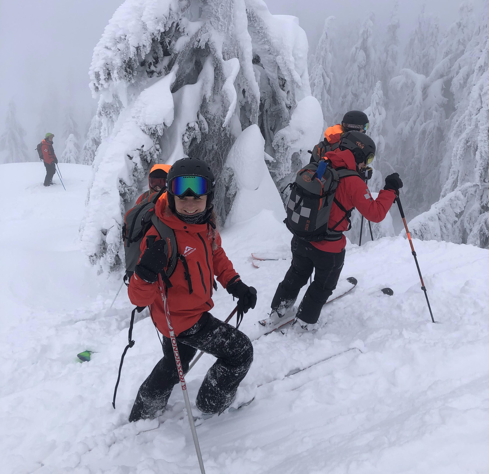
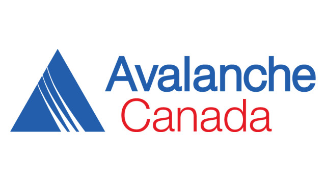

I am passionate about the practical steps needed for addressing climate change. I aim to work at the intersection of disaster risk reduction, climate change adaptation, and earth observation sciences.
My goal is to use geospatial data science to equip governments and citizens with improved information on disaster risks.
My other interests include wilderness first aid, prehospital medical care, and the resilience of healthcare systems under climate change.
My Master's research conducted a social vulnerability analysis and urban temperature modelling to perform a compound risk assessment for the health impacts of heatwaves in a borough of London
Avalanche mitigation in British Columbia, Canada

The ski patrol team trains on avalanche forecasting, monitoring of conditions, and mitigation techniques for within a resort boundary
Professional Experiences
Climate Change and Disaster Risk Reduction
JUNIOR RESEARCHER – CLIMATE AND CONFLICT
Red Cross Red Crescent Climate Centre
Synthesized anticipatory action programs for climate-related health risks in conflict settings
Drafted a working paper on anticipatory action in conflict and presented findings to key stakeholders including relevant Anticipation Hub working groups
Co-developed a disaster risk reduction guide for fragile and conflict-affected settings with the German Red Cross
CONSULTANT - CLIMATE CHANGE AND CARBON MARKETS
Hamerkop Climate Impacts
Provided technical assistance and project coordination for nature-based solutions funded by carbon finance (from pre-feasibility to credit issuance) in partnership with NGOs, private sector stakeholders, and local communities
Led capacity-building, stakeholder engagement, and fieldwork activities in multilingual and multicultural contexts
Conducted research and communication on climate policy developments and contributed to proposal writing
RESEARCHER AND PROJECT COORDINATOR
Gathering Voices Society
Supported Indigenous communities in developing and implementing Indigenous-led fire stewardship programs to adapt to worsening wildfires
Conducted participatory research on Indigenous-led environmental stewardship, disaster risk reduction, and climate adaptation
Led stakeholder engagement, fundraising, and donor relations to support program implementation
RESEARCH CONSULTANT
Rights and Resources Initiative
Collected and analysed data on Indigenous land tenure through geospatial databases and government consultations
Co-authored a legal analysis of forestry and land management regimes in Canada
RECOVERY COORDINATOR
Emergency Management British Columbia
Monitored wildfire recovery progress by maintaining daily contact with local governments and First Nations
Contributed to the development of a recovery toolkit for local governments and First Nations to guide post-disaster recovery efforts
Prehospital Medical Response
TEAM LEAD - SKI PATROL
Mount Seymour Resort
Performed resort-wide hazard assessments, manual avalanche mitigation, and ensured slope safety by marking hazards and monitoring conditions
Provided emergency response, including prehospital assessments, treatments, and coordination of advanced medical care
Assisted guests with safety concerns, provided exceptional customer service, and collaborated with team members for emergency rescues and transport
EMERGENCY MEDICAL RESPONDER
British Columbia Ambulance Service
Provided emergency 911 response, including on-scene patient assessments, treatments, and stabilization while coordinating with fire, police, and hospital staff
Conducted interfacility transports, ensuring continuous monitoring and care during patient transfers between hospitals, clinics, and specialized facilities, collaborating with medical teams
Worked alongside paramedics, nurses, and other first responders to deliver high-quality prehospital care and ensure seamless patient handoff across agencies
WILDERNESS FIRST AID INSTRUCTOR
Coast Wilderness Medical Training
Instructed groups of up to 30 students in wilderness first aid, backcountry preparedness, and emergency response techniques, ensuring participants were well-prepared for outdoor scenarios
Taught key skills in trip planning, communication strategies, and risk management, helping students understand how to safely navigate remote environments and handle emergencies
Education
Master of Science (Distinction) in Risk, Disaster, and Resilience
University College London
Dissertation topic: Urban heat risk in a changing climate: spatial modelling of social vulnerability to the health impacts of heatwaves in London, UK
Member of student organizing committee for the department’s annual conference “Futures of Risk”
Bachelor of Science (Honours) in Natural Resources Conservation
University of British Columbia
Final research project: Utilization of Remotely Sensed Data to Quantify the Effect of Urbanization on Mangrove Ecosystems in Belize
Served as Vice President of the UBC International Forestry Students Association and as Liaison Officer to the Commonwealth Forestry Association
Completed a semester abroad at the University of Copenhagen
Skills and Certifications
Technology
Python (Numpy, Pandas, Geopandas, Scikit-learn)
R programming
ESRI (ArcGIS, QGIS, StoryMaps)
Git
Languages
English: Native
French: Fluent
Spanish: Conversational
Emergency Response
Emergency Medical Responder
British Columbia Emergency Medical Asssistants Licensing Board
Introduction to Mental Health in the Workplace
Qualsafe
The World of Red Cross and Red Crescent
International Federation of Red Cross and Red Crescent Societies
Field Work and Outdoor Recreation
Fieldwork Safety: First Aid, Risk Management & Field Skills
Remote Area Risk International
Off Site Safety Management
Royal Geographical Society
Open Water Diver
PADI

Avalanche Skills Training 1 (AST-1)
Canada West Mountain School
Publications
Journal articles
Roberts, E. & Sun, T. (2024). Compound Urban Heat Risk Revealed by Co-location of Social Vulnerability and Elevated Temperatures in London, UK: A Spatial Analysis. Submitted for publication.
Nikolakis, W. & Roberts, E. (2021). Wildfire Governance in a Changing World: Insights for Policy Learning and Policy Transfer.
Risk, Hazards & Crisis in Public Policy, 13(2), 144-164.
https://doi.org/10.1002/rhc3.12235
Nikolakis, W. & Roberts, E. (2020). Indigenous fire management: a conceptual model from literature.
Ecology and Society, 25(4):11.
http://dx.doi.org/10.5751/ES-11945-250411
Nikolakis, W., Roberts, E., Hotte, N., & Myers-Ross, R. (2020). Goal Setting and Indigenous Fire Management: a Holistic Perspective.
International Journal of Wildland Fire, 29(11), 974-982.
https://doi.org/10.1071/WF20007
Contributions to reports
Rights and Resources Initiative (2023). Who Owns the World’s Land? Global State of Indigenous, Afro-descendant, and Local Community Land Rights Recognition from 2015–2020
IFRC (2024). Navigating Fragility, Conflict and Violence to strengthen community resilience: A handbook for DRR practitioners